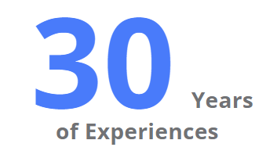

Would you like to consult a pediatrician, also specialized in
allergology, pneumonology and immunology in Brussels? So not just
your usual pediatrician, but a specialist with 3 degrees, which can
offer you a pediatric consult, followed-up right away
by specialized care?
Make an appointment with Dr Uwe Joachim EHRENTREICH!
The consultation can be done in the office (Rue Alphonse Renard
40, Ixelles, Brussels) or by teleconsultation. Make an appointment
to assess any respiratory diseases, asthma disorders or
psychoneurological evolution.
Meet Dr. Uwe
Dr Uwe Ehrentreich works in a private practice and specializes in
pediatric pneumology, allergology and immunology.
Speaker at numerous conferences, Dr. Ehrentreich continues to train
regularly, attends congresses and is a member of various associations
around pediatric pneumology, allergology and immunology. Member of
the Belgian Pediatric Society, of the EPRS European Pediatric Respiratory
Society and member of the Association of Belgian Allergists.
Dr Uwe Joachim Ehrentreich, pediatrician and pneumology allergist
in Brussels, supports your children from birth to adolescence, paying special
attention to respiratory and allergic diseases of the nose, throat and ears
sphere, as well as to psychomotor and staturoponderal development.
